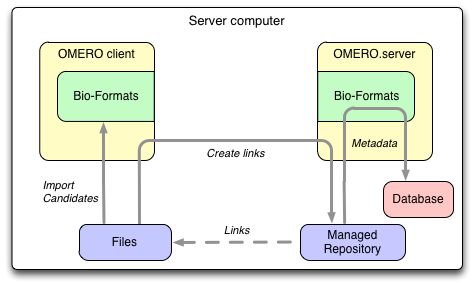
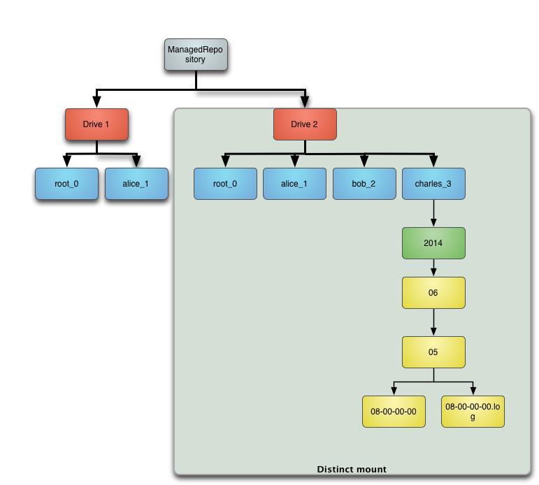

Import in OMERO 5
Paris 2014
Mark Carroll, Colin Blackburn & Josh Moore
Outline
- Introduction to OMERO 5
- Advanced import
- Advanced data output
- Advanced administration
- Discussion
Introduction to OMERO 5
- Changes in OMERO 5
- ManagedRepository
- Filesets
- Upgrades
Changes in OMERO 5
OMERO 5 introduces improvements to image import that preserve your original data and reduce data duplication.
We begin by outlining the change that came with version 5.0.0: OMERO.fs.
OMERO 4 Import
- client sends image planes over the network
- stored as
Pixels
, an internal uncompressed format - additionally, original
archived
files can be stored - though not for HCS plates
- pyramids stored for all large images
OMERO 5 Import
- client uploads only original data
- including HCS plates, everything is
archived
- server does not store Pixels files
- pyramids stored for few large images
- only those without subresolutions in file
OMERO 5 Import

OMERO 5 Data out
- pixels provided directly from original files
- server-side Bio-Formats
- original files always available for download
- including HCS plates
OMERO 5 Data out

ManagedRepository
- server stores and reads original data
- OMERO acts as repository of original data
- without Pixels files, less data duplication
- original data visible in server filesystem
- each Fileset in its own subdirectory
ManagedRepository

Filesets
- a set of related files
- Bio-Formats must read them together
- a set of images, arising from those files
- may be just one file and one image
- Project/Dataset, Screen/Plate hierarchy remains
One to one
One to many

Many to many

Migrating to FS
- new OMERO users should use OMERO 5
- upgrade scripts provided from OMERO 4
pre-FS
images still Pixels, not in Filesetsynthetic
images also not in Fileset- for instance: projections, kymographs
Advanced import
- In-place import
- DropBox import
- Polling & cron job import
In-place import
- client transfers original data to ManagedRepository
- uploads - deafult as already outlined
- creates soft links
- creates hard links
- creates hard links followed by delete of source files
- employs user-defined transfer mode
- server-side import as previously outlined
- Potential for even less data duplication
In-place import
DropBox import
BULLET POINT PLACEHOLDER
FURTHER SLIDES REQUIRED?
DropBox
IMAGE PLACEHOLDER
Polling & cron job import
BULLET POINT PLACEHOLDER
FURTHER SLIDES REQUIRED?
Advanced out
- More on ManagedRepository
- Samba & ldap mapping
More on ManagedRepository
BULLET POINT PLACEHOLDER
Templates

Templates

Templates

Samba & ldap mapping
BULLET POINT PLACEHOLDER
FURTHER SLIDES REQUIRED?
Samba

Advanced admin
- Adding disks
- pre-FS -> FS migration
Adding disks
BULLET POINT PLACEHOLDER
FURTHER SLIDES REQUIRED?
Adding disks
pre-FS -> FS migration
BULLET POINT PLACEHOLDER
FURTHER SLIDES REQUIRED?
Discussion
- Questions?
- Other import scenarios
- Feedback
Other import scenarios
BULLET POINT PLACEHOLDER
FURTHER SLIDES REQUIRED?
Unsmart import

Yada yada import
IMAGE PLACEHOLDER
...
Any Feedback?
- We welcome questions and comments on FS.
- What further work on FS would be most useful?
- For more detail of FS see last year's workshop.